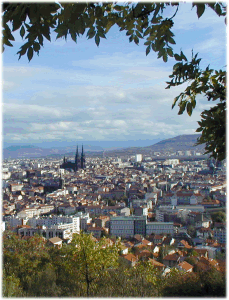

 Clermont vu du Parc Montjuzet; au fond à droite le plateau de Gergovie, lieu mythique et controversé de la victoire de Vercingétorix, le chef gaulois, sur César en 52 av.JC. Vers l'entrée du site, cliquez ici

Vers l'entrée du site, cliquez ici